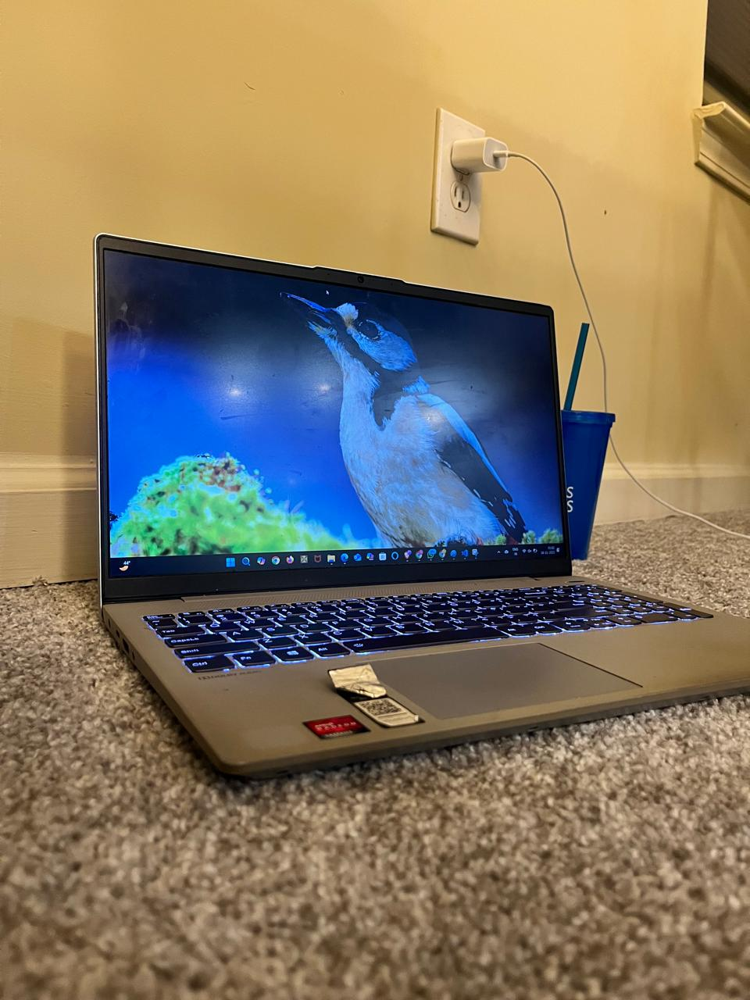
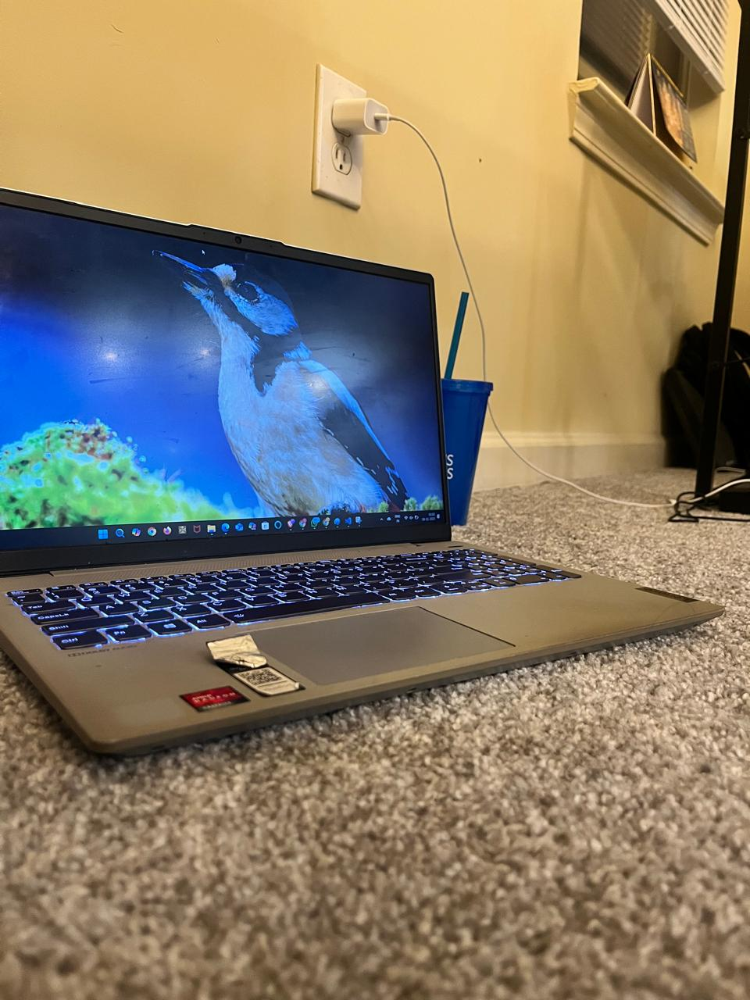
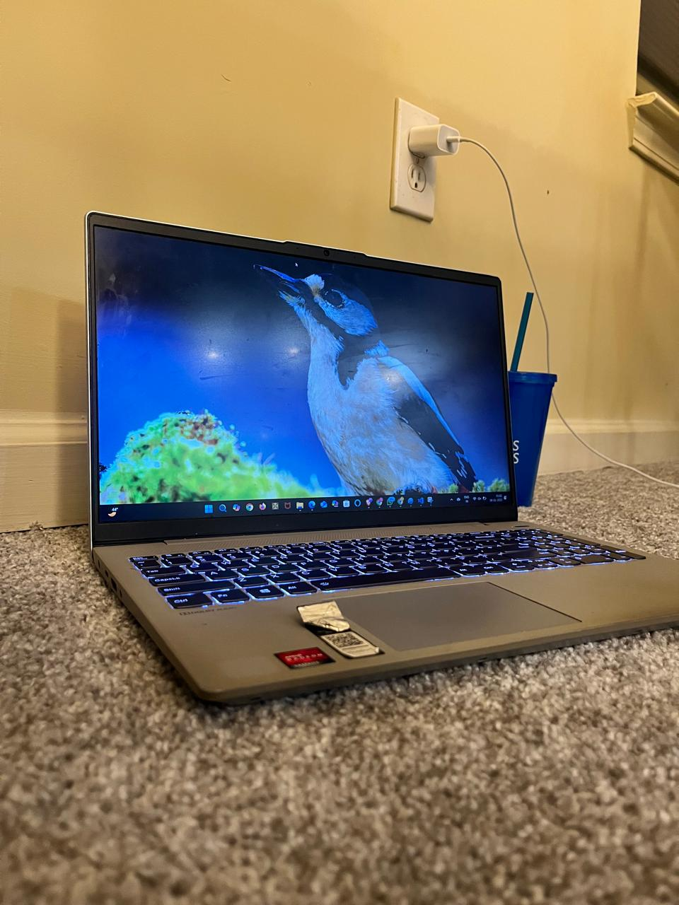
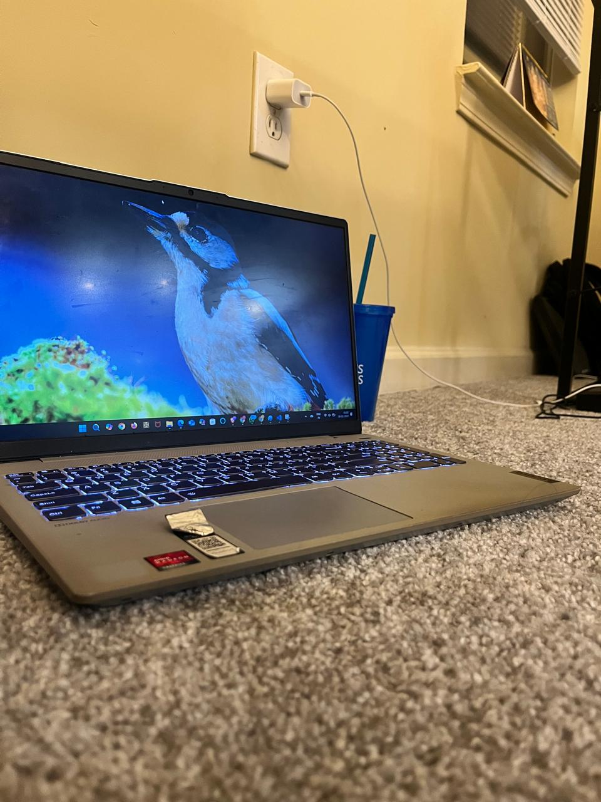
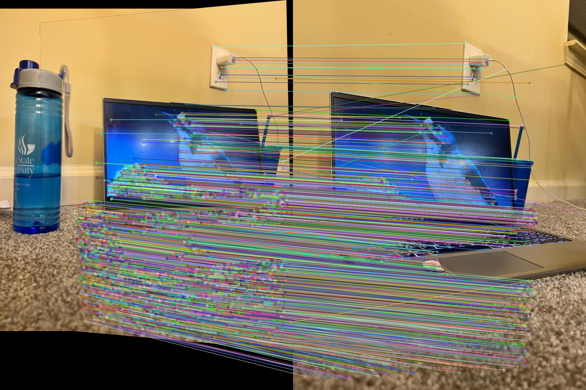
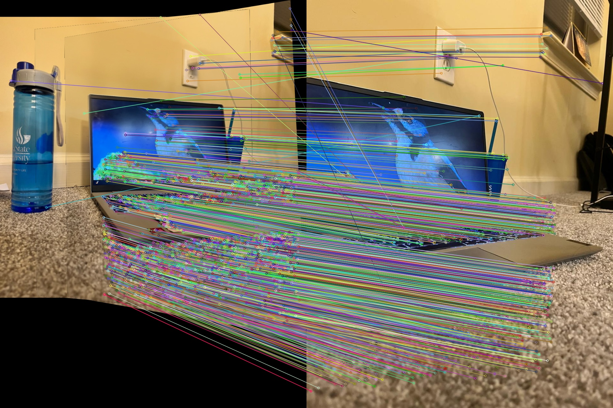
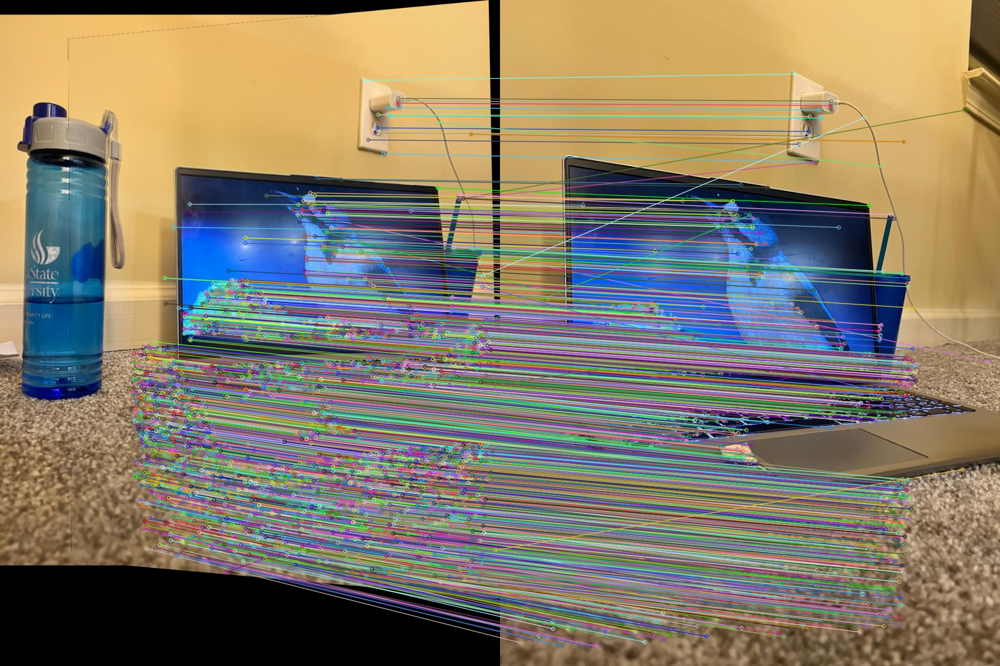
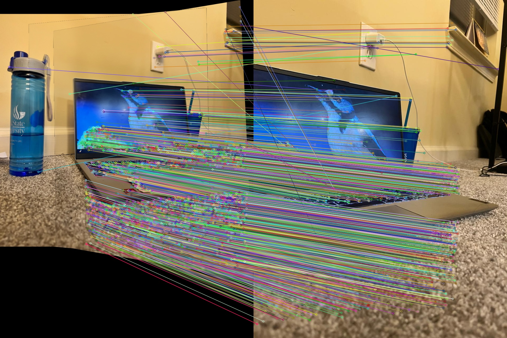

This page shows the results for Module 4 of the assignment. Use the buttons below to switch between Task 1 and Task 2.
Task 1 – Basic Image Stitching
In Task 1, overlapping images are stitched together into a single panorama. Below are the input images and the final stitched output.
Note: All images are loaded from the folders
images_task1/ and outputs_task1/
in the image_stitching_separated_tasks directory.
Task 2 – SIFT & Custom Feature Matching
Task 2 compares a custom SIFT + RANSAC-based pipeline with OpenCV's SIFT implementation. We visualize feature matches and show the final stitched panoramas.
 



 



Note: All images are loaded from the folders
images_task2/ and outputs_task2/
in the image_stitching_separated_tasks directory.